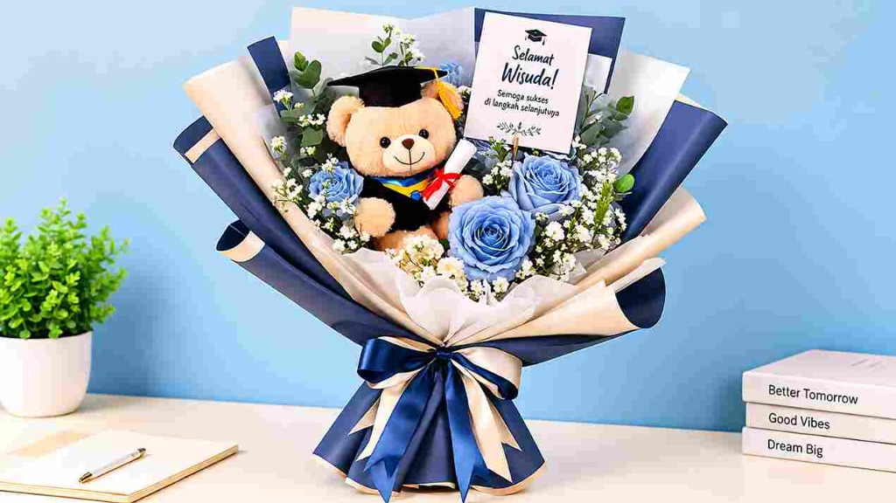

Harga Buket Wisuda 2026 Faktor Penentu dan Cara Hemat
Oleh Tim Souvenir Wisuda · Terbit · Diperbarui · 4 menit baca

10 Ide Souvenir Wisuda Unik dan Berkesan untuk Kenang-Kenangan
Wisuda merupakan momen istimewa yang menandai keberhasilan seseorang dalam menyelesaikan perjalanan pendidikannya. Tidak heran jika banyak orang ingin mengabadikan momen tersebut melalui berbagai cara, salah satunya dengan memberikan souvenir wisuda kepada keluarga, sahabat, teman, maupun tamu undangan.
Memilih souvenir wisuda terkadang menjadi tantangan tersendiri. Selain harus memiliki tampilan menarik, souvenir juga sebaiknya mempunyai manfaat dan nilai kenangan bagi penerimanya.
Saat ini, pilihan souvenir wisuda semakin beragam. Tidak hanya berupa gantungan kunci atau benda dekoratif, tetapi juga produk yang dapat digunakan dalam kehidupan sehari-hari.
Lalu, apa saja ide souvenir wisuda unik yang bisa dijadikan pilihan? Berikut beberapa inspirasi yang dapat membantu Anda menentukan hadiah terbaik untuk momen kelulusan.
1. Tumbler Custom dengan Desain Wisuda
Tumbler menjadi salah satu pilihan souvenir yang menarik karena memiliki fungsi praktis. Produk ini dapat digunakan untuk membawa minuman saat bekerja, kuliah, bepergian, maupun beraktivitas sehari-hari.
Agar lebih berkesan, tumbler dapat diberikan desain khusus seperti nama wisudawan, tanggal kelulusan, logo kampus, atau ucapan selamat wisuda.
Selain bermanfaat, tumbler custom juga dapat menjadi kenang-kenangan yang digunakan dalam waktu lama.
2. Notebook atau Buku Catatan Eksklusif
Notebook cocok diberikan kepada teman, keluarga, maupun tamu undangan dalam acara wisuda.
Produk ini memiliki fungsi yang cukup luas, mulai dari mencatat pekerjaan, menyusun rencana, hingga menuliskan berbagai ide.
Untuk memberikan kesan eksklusif, pilih notebook dengan sampul hardcover dan tambahan desain bertema kelulusan.
3. Boneka Wisuda yang Menggemaskan
Boneka wisuda merupakan pilihan hadiah yang memiliki nilai sentimental. Bentuknya yang lucu dengan pakaian toga mini menjadikannya salah satu kenang-kenangan yang menarik.
Boneka juga dapat dibuat lebih personal dengan menambahkan nama wisudawan, selempang, atau tulisan ucapan selamat.
Souvenir ini cocok diberikan kepada sahabat, pasangan, maupun anggota keluarga yang sedang merayakan kelulusan.
4. Gantungan Kunci Custom
Jika membutuhkan souvenir dengan jumlah banyak, gantungan kunci custom dapat menjadi alternatif yang praktis.
Desainnya bisa disesuaikan dengan tema acara wisuda, seperti miniatur toga, topi wisuda, inisial nama, atau logo universitas.
Ukurannya yang kecil membuat produk ini mudah dibagikan kepada tamu undangan.
5. Pouch Multifungsi
Pouch merupakan souvenir yang dapat digunakan untuk menyimpan berbagai barang kecil, seperti alat tulis, kosmetik, kabel, atau perlengkapan pribadi.
Pilih bahan yang berkualitas dan desain minimalis agar tampilannya lebih menarik.
Tambahan nama atau tulisan khusus juga dapat membuat pouch terasa lebih personal.
6. Miniatur Toga Wisuda
Miniatur toga dapat menjadi simbol kelulusan yang unik. Produk ini cocok dijadikan pajangan di meja kerja, rak buku, atau lemari koleksi.
Desainnya dapat dilengkapi dengan nama, tanggal wisuda, dan identitas universitas.
Miniatur toga memberikan kesan bahwa souvenir tersebut memang dibuat khusus untuk memperingati momen kelulusan.

7. Mug Custom Bertema Kelulusan
Mug custom termasuk pilihan souvenir yang mudah ditemukan dan memiliki fungsi sehari-hari.
Anda dapat menambahkan foto, nama, ilustrasi toga, atau pesan singkat pada permukaannya.
Agar lebih menarik, mug bisa dikemas menggunakan kotak hadiah khusus sehingga terlihat lebih eksklusif ketika diberikan.
8. Totebag Custom
Totebag menjadi pilihan menarik bagi penerima yang menyukai produk praktis dan dapat digunakan berulang kali.
Desainnya bisa dibuat sederhana menggunakan ilustrasi topi wisuda, nama kampus, atau kalimat motivasi.
Selain fungsional, totebag juga memberikan ruang yang cukup luas untuk menampilkan identitas acara wisuda.
9. Gift Box Souvenir Wisuda
Jika ingin memberikan sesuatu yang lebih istimewa, gift box dapat menjadi pilihan terbaik.
Gift box memungkinkan beberapa produk digabungkan dalam satu kemasan, misalnya notebook, pulpen, tumbler, dan kartu ucapan.
Dengan penataan yang rapi dan desain kemasan yang menarik, hadiah sederhana dapat terlihat lebih premium.
10. Pulpen Premium dengan Kemasan Khusus
Pulpen merupakan benda sederhana yang sering digunakan dalam aktivitas sehari-hari.
Untuk acara wisuda, pulpen dapat dipilih dengan desain elegan dan ditambahkan nama atau identitas universitas.
Kemasan khusus juga dapat memberikan nilai tambah sehingga pulpen terlihat lebih pantas sebagai hadiah kelulusan.
Tips Memilih Souvenir Wisuda yang Tepat
Sebelum menentukan pilihan, ada beberapa hal yang sebaiknya diperhatikan:
Sesuaikan dengan Anggaran
Tentukan anggaran terlebih dahulu agar pemilihan souvenir lebih terarah. Bandingkan beberapa produk dengan spesifikasi yang sejenis sebelum melakukan pemesanan.
Perhatikan Kegunaan Produk
Pilih souvenir yang dapat digunakan kembali oleh penerima. Produk fungsional biasanya mempunyai nilai manfaat lebih tinggi.
Pilih Desain yang Sesuai
Sesuaikan desain dengan tema acara, warna almamater, atau karakter wisudawan.
Pertimbangkan Kemasan
Kemasan yang rapi dapat meningkatkan kesan eksklusif dan membuat souvenir terlihat lebih istimewa.
Kesimpulan
Souvenir wisuda tidak harus selalu mahal untuk menjadi kenang-kenangan yang berkesan. Tumbler, notebook, boneka, gantungan kunci, hingga gift box dapat menjadi pilihan menarik sesuai kebutuhan dan anggaran.
Hal terpenting adalah memilih produk yang memiliki manfaat, desain menarik, serta mampu mengingatkan penerima pada momen kelulusan.
Dengan perencanaan yang tepat, souvenir wisuda dapat menjadi bentuk apresiasi sederhana yang menyimpan kenangan berharga.
Rekomendasi Souvenir Wisuda Premium untuk Hadiah Kelulusan yang Elegan
Memberikan hadiah saat seseorang merayakan kelulusan merupakan salah satu bentuk apresiasi atas perjuangan dan pencapaiannya. Setelah melewati berbagai tantangan selama masa pendidikan, momen wisuda menjadi waktu yang tepat untuk memberikan sesuatu yang istimewa.
Salah satu pilihan yang dapat dipertimbangkan adalah souvenir wisuda premium.
Berbeda dengan souvenir sederhana, produk premium biasanya memiliki perhatian lebih terhadap kualitas bahan, desain, detail pengerjaan, serta kemasan. Hal tersebut membuat hadiah terlihat lebih eksklusif dan mempunyai nilai lebih bagi penerimanya.
Namun, memilih souvenir premium bukan hanya tentang harga yang tinggi. Kualitas, fungsi, dan kesesuaian produk juga perlu diperhatikan.
Berikut beberapa rekomendasi souvenir wisuda premium yang dapat dijadikan inspirasi:
1. Gift Box Wisuda dengan Desain Eksklusif
Gift box menjadi pilihan menarik untuk menghadirkan beberapa hadiah dalam satu kemasan.
Isi gift box dapat disesuaikan dengan kebutuhan, misalnya tumbler, notebook, pulpen, gantungan kunci, dan kartu ucapan.
Agar terlihat premium, gunakan kotak dengan bahan kokoh, finishing rapi, serta penataan produk menggunakan foam insert yang dipotong mengikuti bentuk masing-masing barang.
Perpaduan warna navy, putih, dan gold dapat memberikan kesan elegan pada kemasan.
2. Tumbler Stainless dengan Kemasan Premium
Tumbler stainless merupakan produk yang memiliki nilai fungsional sekaligus tampilan modern.
Pilih tumbler dengan material yang berkualitas, finishing yang rapi, dan desain minimalis.
Untuk meningkatkan nilai eksklusivitas, tambahkan grafir nama, logo universitas, atau tulisan khusus.
Tumbler dapat dikemas dalam kotak individual agar lebih menarik ketika diberikan sebagai hadiah.
3. Notebook Hardcover Custom
Notebook hardcover cocok diberikan kepada seseorang yang menyukai kegiatan menulis, mencatat, dan menyusun rencana.
Sampul dapat menggunakan bahan berkualitas dengan tambahan emboss atau cetakan nama.
Desain minimalis dengan kombinasi warna gelap dan aksen gold dapat memberikan tampilan elegan.
Notebook juga dapat dipadukan dengan pulpen premium dalam satu paket hadiah.
4. Pulpen Metal Eksklusif
Pulpen metal mempunyai tampilan lebih elegan dibandingkan pulpen biasa.
Selain digunakan untuk menulis, produk ini juga dapat menjadi aksesori meja kerja.
Untuk souvenir wisuda, pilih pulpen dengan desain sederhana dan tambahan ukiran nama atau tanggal kelulusan.
Kemasan kotak individual akan membuat tampilannya semakin berkelas.
5. Jam Meja atau Jam Digital
Jam meja dapat menjadi hadiah yang bermanfaat sekaligus dekoratif.
Produk ini cocok ditempatkan di meja belajar, meja kerja, maupun kamar tidur.
Pilih desain minimalis dengan tampilan yang mudah dibaca dan material yang terlihat rapi.
Jam digital juga dapat dipertimbangkan sebagai alternatif hadiah modern.
6. Paket Perlengkapan Kerja
Wisuda menjadi awal perjalanan baru menuju dunia kerja atau pendidikan lanjutan. Karena itu, paket perlengkapan kerja dapat menjadi hadiah yang relevan.
Beberapa produk yang dapat dimasukkan antara lain:
- Notebook hardcover.
- Pulpen metal.
- Tumbler.
- Tempat kartu.
- Pouch.
- Kartu ucapan motivasi.
Paket ini tidak hanya menarik secara visual, tetapi juga mempunyai manfaat untuk aktivitas setelah kelulusan.
7. Plakat atau Miniatur Kenang-Kenangan
Plakat wisuda cocok diberikan sebagai simbol penghargaan atas pencapaian seseorang.
Desainnya dapat menggunakan material akrilik, kayu, atau kombinasi beberapa bahan.
Tambahkan nama penerima, gelar, tanggal kelulusan, dan ucapan khusus agar hadiah mempunyai nilai personal.
8. Paket Souvenir dengan Personalisasi
Personalisasi merupakan salah satu cara untuk membuat hadiah terlihat lebih eksklusif.
Beberapa detail yang dapat disesuaikan antara lain: nama penerima, logo universitas, warna kemasan, pesan motivasi, tanggal wisuda, dan desain khusus pada setiap produk.
Dengan personalisasi, hadiah tidak hanya terlihat menarik, tetapi juga memiliki identitas tersendiri.
Cara Menentukan Souvenir Wisuda Premium yang Berkualitas
Agar tidak salah memilih, perhatikan beberapa aspek berikut:
- Periksa Material Produk: Pastikan bahan yang digunakan sesuai dengan fungsi produk dan memiliki kualitas pengerjaan yang baik.
- Perhatikan Detail Finishing: Produk premium sebaiknya memiliki permukaan yang rapi, cetakan jelas, dan tidak memiliki bagian yang terlihat cacat.
- Pilih Desain yang Tidak Berlebihan: Desain sederhana sering kali memberikan kesan lebih elegan. Gunakan kombinasi warna dan ornamen secara proporsional.
- Gunakan Kemasan yang Mendukung: Kemasan menjadi bagian penting dari pengalaman menerima hadiah. Pilih box yang kokoh dengan interior yang tertata rapi.
- Sesuaikan dengan Karakter Penerima: Pertimbangkan apakah penerima lebih menyukai hadiah fungsional, dekoratif, atau produk yang dapat digunakan dalam aktivitas sehari-hari.
Mengapa Gift Box Menjadi Pilihan Menarik untuk Souvenir Wisuda Premium?
Gift box mempunyai keunggulan karena dapat menggabungkan beberapa produk dalam satu paket.
Selain memberikan tampilan yang lebih menarik, gift box juga memungkinkan setiap barang ditata secara khusus sehingga tidak mudah bergeser.
Beberapa keunggulannya meliputi:
- Tampilan hadiah lebih eksklusif.
- Produk dapat dikombinasikan sesuai kebutuhan.
- Kemasan bisa dibuat custom.
- Cocok untuk hadiah pribadi maupun acara formal.
- Memberikan pengalaman membuka hadiah yang lebih berkesan.
Karena itulah, gift box dapat menjadi pilihan bagi siapa saja yang ingin memberikan hadiah wisuda dengan tampilan lebih istimewa.
Kesimpulan
Souvenir wisuda premium merupakan pilihan hadiah yang dapat memberikan kesan lebih elegan dan berkesan. Mulai dari tumbler stainless, notebook hardcover, pulpen metal, hingga gift box eksklusif, setiap produk memiliki keunggulan tersendiri.
Untuk mendapatkan hasil terbaik, jangan hanya memperhatikan harga atau tampilan luar. Pastikan kualitas material, fungsi, detail finishing, dan kemasan juga menjadi pertimbangan.
Dengan pemilihan yang tepat, hadiah wisuda dapat menjadi bentuk apresiasi yang bermanfaat sekaligus kenangan berharga bagi penerimanya.
Jelajahi Cluster Kategori Souvenir Wisuda Lainnya:
💐 Cluster 1: Buket Bunga & Boneka Wisuda
Pilihan buket bunga artificial premium awet dan kombinasi boneka toga yang siap foto kapan saja.
🧸 Cluster 2: Boneka Wisuda Custom Toga
Boneka karakter lucu dengan seragam toga universitas lengkap, selempang bordir nama dan gelar.
🎁 Cluster 3: Hampers & Gift Box Eksklusif
Paket hadiah wisuda lengkap dengan tumbler grafir, notebook, pena elegan, dan kartu ucapan.
🏆 Cluster 4: Plakat Akrilik & Cinderamata Mewah
Plakat akrilik cetak UV berkualitas tinggi dengan desain elegan untuk kenang-kenangan resmi kelulusan.
💡 Cluster 5: 10 Ide Souvenir Wisuda Unik untuk Tamu
Panduan tips memilih souvenir wisuda hemat budget namun tetap berkelas dan penuh arti.
🎓 Cluster 6: Paket Grosir Panitia & Kampus
Layanan produksi massal untuk panitia wisuda fakultas, universitas, dan sekolah dengan harga grosir hemat.
Faktor yang memengaruhi harga
| Faktor | Pengaruh |
|---|---|
| Ukuran | Semakin besar, semakin banyak bahan |
| Isi | Boneka, bunga artifisial, atau campuran |
| Bahan wrapping | Standar atau premium |
| Kustom | Kartu ucapan, nama, aksesori |
| Jumlah | Pesanan banyak biasanya lebih hemat per pcs |
Cara hemat membeli buket wisuda
Pilih ukuran sedang, fokus pada satu tema warna, dan hindari aksesori yang tidak perlu. Pesan lebih awal agar tidak ada biaya percepatan.
Cara meminta penawaran
Sebutkan jumlah, ukuran, tema warna, budget, dan tanggal wisuda saat chat WhatsApp. Dengan data lengkap, penawaran bisa diberikan lebih cepat dan akurat.
Perbarui informasi harga
Harga dapat berubah mengikuti bahan dan tingkat kerumitan. Halaman ini diperbarui berkala; untuk angka terbaru, hubungi kami.
Rekomendasi paket
Paket Buket Wisuda
Buket boneka dan bunga wisuda yang awet dan bisa disimpan.
Lihat PaketTanya via WhatsAppFAQ
Apakah harga sudah termasuk ongkir?
Umumnya belum. Ongkir dihitung sesuai alamat dan ekspedisi.
Bisa pesan 1 buket saja?
Bisa. Minimal order 1 pcs untuk paket buket.
Tentang penulis
Tim Souvenir Wisuda adalah pembuat souvenir wisuda custom yang melayani pesanan perorangan, sekolah, dan kampus. Kenali kami.